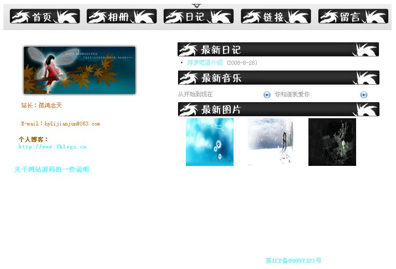

碎碎念~
资料卡
关于我
| 昵称/Nickname | 酱油三三/幸福的路痴/maoxuner |
| 标签/Tags | 汉子 鸡 摩羯 |
| 位置/Location | 杭州 |
| 邮箱/Email | 点击查看 |
| 技能/Skills | 全栈、DevOps |
| 语言/Language | 中文/English |
关于本站
| 名称/Site | 二次元の技术宅 |
| 生日/Birthday | 2014-06-28 |
| 域名/Domain | www.maoxuner.cn |
| 描述/Description | 爱好二次元的技术宅的碎碎念 |
| 目标/Aims | 笔记、分享 |
| 特色/Feature | php/linux/动漫 |
碎碎念
初衷
在周围的小伙伴中，我算是很早就接触网络了的。2006年的时候，我家已经接入了宽带。我申请了起一个QQ号，那时候QQ空间才刚刚起步。玩空间，最多的是转发一些日志，很少自己写。当然，也没啥好写的。空间的文章也只有QQ好友才能查看，偶尔写写日志，还会因为审核的问题被禁止。也尝试用过百度空间，但是总觉得没那么尽兴。于是，我就想找个自由的地方，写我想写的东西，给大家看。或许，自己创建一个网页是个好的办法。
折腾
很多朋友觉得我是个玩电脑的大神，却没意识到这些知识也是我一点点的积累起来的。从萌发建站的念头，到正式建站，真的过了好久。在网上四处找免费资源，当时我还没有网银啥的支付手段。用过5944、主机屋、8u等的免费主机。那会儿最喜欢的一套博客系统，是asp写的叫做浮梦呓语的博客系统，非常精美。我还给它添加了好多功能，前台的音乐播放器，后台的文件管理器。

在不断的探索中，我又找到了Emlog/WordPress/Typecho这些优秀的php博客系统。相比于Emlog的精简，WordPress的庞大，我更喜欢优雅的Typecho。而且，我喜欢Typecho的寓意：type & echo，念念不忘，必有回响。后来，终于买了第一个域名，第一个虚拟主机，我用Typecho创建了我的博客宅萌小窝。我给它安装了好多插件，又添加了好多功能，配置成我喜欢的样子了。后来搬过几次主机，也更换了站名，渐渐发现自己懒得折腾了。我要的只不过是个可以方便的记录和分享的地方。
回归
正如阮一峰的文章搭建一个免费的，无限流量的Blog—-github Pages和Jekyll入门总结的那样，写博客的人会经历三个阶段：
- 刚接触Blog，觉得很新鲜，试着选择一个免费空间来写
- 发现免费空间限制太多，就自己购买域名和空间，搭建独立博客
- 觉得独立博客的管理太麻烦，最好在保留控制权的前提下，让别人来管，自己只负责写文章
可能也是因为成长了，发现自己再也没有那么多时间，慢慢折腾一件事情了。现在最想做的就是，用最简便的方法，高效的完成事情。我现在写博客的最大目的就是记录，把自己踩过的那些坑，记录下来，以备日后查阅。git的pages服务是个很好的选择，加上hexo或者jekyll之类的生成器，简直完美了。
原来的博客出问题已经好久了，百度网盘分享的链接被封禁了，邮件评论系统也迟迟没有解决。另外，之前写博客的时候，感觉自己写的不够严谨。当然，最初的目的也只不过是给自己做个笔记而已。但是想想，技术性的文章还是严谨一些吧，万一有小伙伴看到了，也能用得上。
好吧，碎碎念就这么多，接下来就是慢慢整理旧文章了。
其他
说个题外话。之前在页面上留的都是明文的邮箱地址，可能有人专门爬取邮箱地址，发送广告邮件吧，收到不少垃圾邮件挺烦人的。后来发现有个博主的方法很聪明，在页面上留下了邮箱地址base64加密后的密文。然而，这也太麻烦了点，读者得会base64解密才行。于是我就想，何不在页面上通过js来显示解密后的明文呢？部分html代码如下：
<span onclick="this.innerHTML=window.atob('bWFveHVuZXJAMTI2LmNvbQ==')">点击查看</span>
其中bWFveHVuZXJAMTI2LmNvbQ==是加密后的字符串。用户点击后才会弹窗显示明文邮件地址，如果用简单的爬虫来爬取的话，就得不到你的邮箱地址啦。
估计也没有多少人会查看我的邮箱地址吧。哈哈，纯粹的装X咯。学以致用了。
酱油三三
2017年3月5日